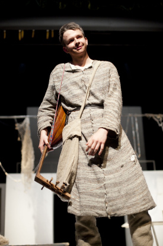

Hrám celý život (Juraj Daniš)
Desivý výkrik do tmy. Diváci v prvých radoch sú v šoku. Všetkým naskakujú zimomriavky. Juro Daniš neuveriteľne realisticky stvárnil vnútorný boj človeka, ktorý v živote sv. Jána z Boha spôsobil nemalý chaos. Preto sme sa s týmto, možno raz profesionálnym hercom porozprávali.Som usmievavý slobodný umelec Antonio Melro, ktorý si jedného dňa nerozmyslí, čo by chcel od života a nechtiac unesie malého Juana s úmyslom zaniesť ho potom domov. Situácia sa mu ale zjavne vymkne z rúk. Po istom čase zistí, že spravil niečo zlé, no bojí sa. Má strach z toho, čo by s ním spravili Juanovi rodičia, keby ho priviedol naspäť. Moja postava je dvojtvárna. Na jednej strane som usmievavý a vzápätí sa mením na nevrlého a vystrašeného. Niekedy akoby som konal skratovo. Hra začína aj končí tým, že ľutujem to, čo som spravil. Som ten, kto prežil život plný hriechu. Juan sa mi chce pomstiť, celý život ma hľadá. Keď ma nájde, odpustí mi. No ja sám mám problém odpustiť si. Presviedča ma, že Boh mi všetko prepáči, keď budem chcieť.
Aké boli tvoje pocity, keď si sa priamo na javisku dozvedel, že zomrieš?Napadlo mi: „Díky, Broňa!“ No uvedomoval som si, že nejako to skončiť musí. Keby som ako umierajúci odišiel, bolo by to falošné. Nemám problém s umieraním, len ma prekvapilo, že som sa to dozvedel až neskôr. Aj „smrť“ patrí k hereckému umeniu, ku ktorému sa snažím pričuchnúť, rád ju teda podstúpim.
Chcel by si svoje herecké schopnosti uplatniť aj v budúcnosti?Aké herecké schopnosti?
No tie, ktoré predvádzaš!Divadlo je pre mňa úplne všetkým. Žijem ním celý život, hoci sa nachádzam práve niekde inde. Som taký trošku ,,prepatý“. Obrovským zážitkom je pre mňa to, že môžem v tejto hre účinkovať. Vážim si rolu, ktorú som dostal. Je to úloha, ktorá ma naozaj vystihuje. Keď sme prišli prvýkrát na skúšku do divadla, zmocnil sa ma skvelý pocit. Emócie zo mňa „išli“ tak, ako mali. Cítil som sa pohodovo. Na javisku je to úplne iné ako v telocvični. Atmosféra divadla veľmi napomáha k dobrým výkonom. Po tejto skúsenosti rozmýšľam nad štúdiom na VŠMU alebo minimálne nad učiteľstvom hudobnodramatického umenia. Jednoducho, od tohto fachu by som nechcel odísť. Mojim snom je hrať naďalej.
Ako sa ti spolupracuje s režisérkou?Sestru Máriu Marthe obdivujem. Dokáže spraviť obrovskú hru, kde vystupuje veľa ľudí. Dokáže ju zrežírovať bez jediného výkriku. Hral som v niekoľkých hrách na „dramáku“, kde režiséri neboli schopní dať do kopy dvadsať ľudí bez toho, aby nekričali. Boli to nervy a stres, preto sa mi teraz hrá úžasne. Obdivujem, že sestra si nájde čas na každého. Každý sa jej môže spýtať na svoju úlohu, kostým, na hocičo. Má moju poklonu za to, čo robí.
Si spokojný so svojou úlohou?Nič iné by som hrať nechcel a asi by som to ani dobre nezahral. Je to úplne bezkonkurenčná úloha. Dúfam, že mi ľudia uveria, že som Antonio Melro.
Boli nácviky ťažké? Musel si často zostávať „po škole“?Niekedy som zostával v telocvični aj do pol šiestej. Stalo sa, že som bol párkrát dobre vyhrešený, lebo som nespravil niečo tak, ako som mal. Časom sa však všetko vykryštalizovalo. Našťastie, sestra je spokojná.